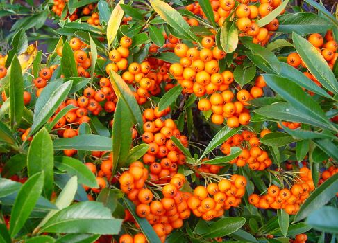
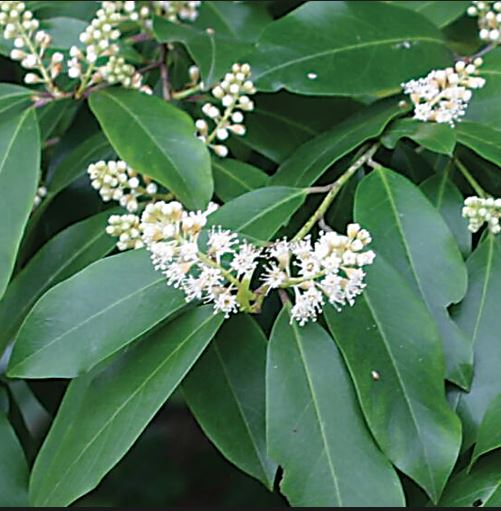
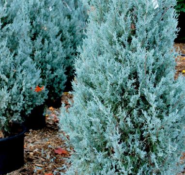
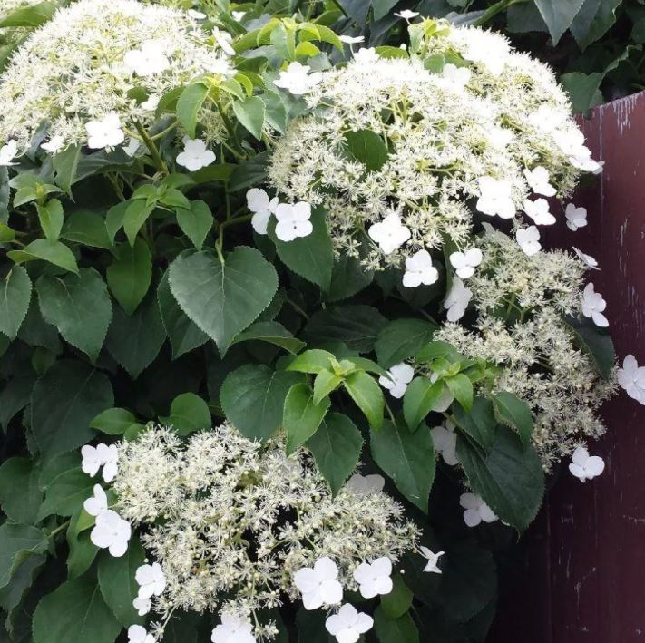
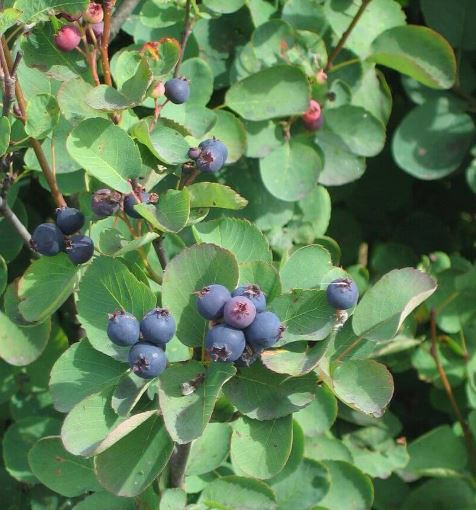
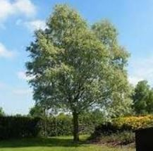

Upper Drive
Back to Home
Pyracantha 'Orange Glow'
Nature: Pyracantha are evergreen shrubs or small trees, with spiny branches bearing simple leaves and corymbs of small white flowers followed by showy red, orange or yellow berries.
Size:
Habitat: Easy to grow in fertile soil in sun or partial shade. Tolerant of pollution
Prune: Prune in late winter or early spring.

Cherry Laurel (Prunus laurocerasus)
Nature: A vigorous, large, spreading evergreen shrub with handsome, glossy dark green leaves to 15cm in length.
Size: 4-8m
Habitat: North–facing or South–facing or West–facing or East–facing
Prune: Once established, most evergreen shrubs are fairly low maintenance and need little or no regular pruning. Pruning, when required, is generally carried out in mid to late spring.

Juniper
Nature: evergreen tree.
Size: 4-8m
Habitat: North–facing or South–facing or West–facing or East–facing
Prune:

Hydrangea Petiolaris
Nature: Though slow growing to start with, it is a vigorous climber that can cover outbuildings or brighten up shady house walls.
Size: 4-8m
Habitat: They will grow well in most soils provided they are reasonably moist and fertile.
Prune: Climbing hydrangeas produce flowers on last year’s shoots. To ensure that the plant have enough time to develop flowering wood for the next year, prune in summer straight after flowering

Juneberry
Nature: Though slow growing to start with, it is a vigorous climber that can cover outbuildings or brighten up shady house walls.
Size: 4-8m
Habitat: They will grow well in most soils provided they are reasonably moist and fertile.
Prune:

White Willow (Salix Alba)
Nature: The white willow is the largest species of willow.
Size: 25m
Habitat: Like most willows, the white willow is found growing in wet ground such as river and stream sides.
Prune: